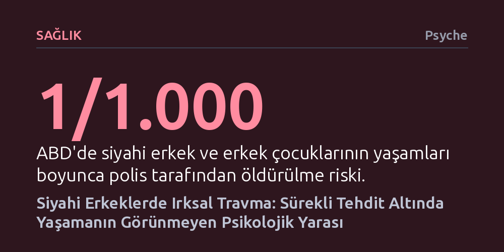

SAGLIK · Psyche · 2026-10-12
Siyahi erkeklerin maruz kaldığı yapısal ve sürekli ırkçılık, klasik travma sonrası stres bozukluğundan farklı olarak kronik bir psikolojik yaralanma üretir. Bu yaralanmanın tetiklediği geri çekilme veya öfke gibi başa çıkma tepkileri ise toplum ve klinisyenlerce acı yerine sıklıkla tehdit olarak yaftalanır.
Siyahi erkeklerdeki mesafeli duruş veya öfkenin bireysel bir saldırganlık değil, süreğen tehdit altında hayatta kalmaya çalışan zihnin rasyonel bir travma tepkisi olduğunu fark ettirir.

Terapi koltuğuna oturan bir siyahi erkek uykusuzluktan, tahammülsüzlükten ve en yakınlarından bile uzaklaşma isteğinden bahsettiğinde, ilk bakışta sıradan bir iş stresi ya da genel anksiyete tablosu göze çarpar. Ancak anlatılanların ayrıntılarına inildiğinde meselenin gündelik kaygılardan çok daha derin olduğu anlaşılır. İş yerinde yetkinliğinin sürekli sorgulanması, doğrudan ve net konuştuğunda ses tonunun saldırgan bulunması veya bir mağazada reyonlar arasında adım adım takip edilmesi gibi gündelik aşağılanmalar bu tablonun asıl kaynağını oluşturur.
Birçok klinisyen bu manzarayı gördüğünde kolayca genel anksiyete, depresyon, aşırı öfke ya da tedaviye direnç teşhisi koyma eğilimindedir. Oysa dışarıdan soğuk bir mesafelenme veya duygusal donukluk gibi görünen tutum, aslında zihnin geliştirdiği zorunlu bir hayatta kalma stratejisidir. Benzer şekilde, yüzeydeki öfke çoğu zaman derin bir kederin, aşağılanmanın ve tükenmişliğin dışavurumudur; kurumlara duyulan güvensizlik ise geçmişten bu yana güvenli olmadığı defalarca tecrübe edilmiş bir sisteme verilen son derece gerçekçi bir yanıttır.
Son yıllarda travma kavramının hemen her olumsuz deneyim için gelişigüzel kullanılması haklı bir kavramsal erozyon endişesi doğurmuş olabilir. Ancak buradaki iddia her ırkçı sözün ya da haksızlığın doğrudan travma olduğu değildir. Asıl tespit, bireyin hayatının hemen her alanında süreğen ırksal tehdide, insanlıktan çıkarmaya ve kısıtlamalara maruz kalmasının, klinisyenler ve toplum tarafından ısrarla yanlış anlaşılan kronik bir psikolojik hasara yol açtığıdır.
Geleneksel travma sonrası stres bozukluğu tanımları genellikle kaza, afet ya da fiziksel saldırı gibi tekil, ani ve sarsıcı olaylar üzerine kuruludur. Oysa siyahi erkeklerin deneyimlediği ırksal zarar, geçmişte olup bitmiş tek bir olaydan ibaret değildir; kontrolü neredeyse imkânsız, gündelik hayatın içine sinmiş ve kesintisiz devam eden yapısal bir tehdit ortamından beslenir. Yıllar önce polisin sebepsiz yere durdurmuş olması, internette bir başka siyahi erkeğin şiddete uğrayarak öldürülüşünü izlemek ya da gelecekte kendi oğlunun da aynı korunma kurallarını öğrenmek zorunda kalacağını bilmek, zihni asla sona ermeyen bir alarm durumuna mahkûm eder.
Bu yıpratıcı tablonun erkekler üzerindeki etkisi cinsiyetten bağımsız değildir; siyahi erkek bedeni toplumsal algıda tehdit, suç ve tehlike imgeleriyle özdeşleştirilir. 2020 Gallup verilerine göre, ABD'de insanların kendilerinden korktuğunu hissettiğini belirten siyahi erkeklerin oranı yüzde 27 iken, bu oran siyahi kadınlarda yüzde 11 düzeyinde kalmaktadır. Ulusal ölüm istatistikleri, siyahi erkek ve erkek çocuklarının hayatları boyunca polis tarafından öldürülme riskinin yaklaşık 1.000'de 1 olduğunu ve bu oranın beyaz erkeklere kıyasla 2,5 kat daha yüksek seyrettiğini ortaya koymaktadır. Üstelik Harvard Üniversitesi'nden iktisatçı Raj Chetty ve ekibinin araştırması, aile gelirinden bağımsız olarak gelir uçurumunun siyahi erkeklerin aleyhine işlediğini ve ABD'deki sayım bölgelerinin yüzde 99'unda yetişkin siyahi erkeklerin beyaz akranlarından daha az kazandığını belgelemektedir.
Bu bulgular yalnızca genel bir ırkçılıkla karşı karşıya olunmadığını, doğrudan siyahi erkekliğe yönelen, onları tehlikeli ve ekonomik olarak feda edilebilir ilan eden cinsiyetlendirilmiş bir dışlama mekanizmasını gösterir. Sorun yalnızca ABD ile de sınırlı değildir. 2022'de Londra'da genç siyahi erkeklerin genel nüfusa kıyasla polis tarafından durdurulup aranma uygulamasına 17 kat daha fazla maruz kalması ve benzer suçlarda beyazlara göre yüzde 41 daha yüksek oranda hapis cezası alması, ırksallaştırılmış tehdit algısının sınırları aşan bir olgu olduğunu kanıtlar.
Siyahi erkeklerin karşılaştığı en yıkıcı paradoks, onları yaralayan toplumsal koşulların aynı zamanda bu yaranın fark edilmesini de engellemesidir. Beyaz çoğunluğun zihninde yerleşmiş olan bilinçdışı önyargılar, siyahi erkekleri şefkatli veya kırılgan bir varlık olarak görmekten uzak, otomatik bir korku refleksiyle doğrudan tehlike kaynağı olarak kodlar. Bu kültürel koşullanma, insanların kendilerini koruma güdüsüyle hareket ettiklerini sanmalarına yol açarak ayrımcı reflekslerini sorgulanmaktan uzaklaştırır.
Bu otomatik algı mekanizması nedeniyle, bir siyahi erkeğin kendisini korumak için takındığı temkinli mesafe düşmanlık, adaletsizliğe duyduğu öfke tehlike, kurumlara karşı beslediği şüphe ise paranoya veya uyumsuzluk olarak yorumlanır. Klinik ortamda bile aşırı tetikte olma ve duygularını saklama hali bir uyum çabası olarak değil, kişilik patolojisi veya karşıt gelme bozukluğu olarak teşhis edilir. Acı çeken birey, yaralı bir insan olarak değil, kontrol altında tutulması gereken bir sorun olarak ele alınır.
Böyle bir ortamda yaşayan birey, terapi odasına adım atmadan çok önce ses tonunu, beden dilini, yüz ifadesini ve duygularını sürekli denetlemek zorunda kalır. İş yerinde doğrudan konuşmasının saldırganlık, sokaktaki doğal hareketlerinin ise şüphe uyandıracağını öğrenmiştir. Sonuçta trajik bir zorunluluk doğar: Bir siyahi erkeğin çektiği acının toplum tarafından tanınabilmesi için, o acıyı çevresini ürkütmeyecek, sakin ve zararsız bir ambalajda sunması beklenir.
Siyahi erkeklerin yaşadığı bu ruhsal gerilim ve savunmacı tutum, sıklıkla geleneksel erkeklik rollerine veya katı maskülinite beklentilerine bağlanarak basitleştirilmeye çalışılır. Oysa bizzat bu deneyimi yaşayan erkekler, durumlarını erkeklik taslamak veya güçlü görünme arzusuyla açıklamazlar. Onların talebi çok daha yalın ve varoluşsaldır: Bir tehdit muamelesi görmeden yaşayabilmek, can güvenliği ve insan onurunun koşulsuz tanınması.
Bu kronik yarayı tanımak yalnızca psikoterapistlerin uzmanlığına bırakılabilecek teknik bir konu değildir; gündelik yaşamda herkesin bakış açısını değiştirmesini gerektirir. Karşımızda içine kapanmış, öfkeli veya mesafeli bir siyahi erkek gördüğümüzde sorulması gereken ilk soru onun neyi yanlış yaptığı değil, neleri göğüslemek ve taşımak zorunda kaldığıdır. Acıyı tehdit sanan toplumsal refleks kırılmadıkça, bu derin psikolojik yara görünmez kalmaya devam edecektir.